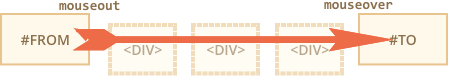

We can split mouse events into two categories: “simple” and “complex”
Complex events are made of simple ones, so in theory we could live without them. But they exist, and that’s good, because they are convenient.
An action may trigger multiple events. For instance, a click first triggers mousedown, when the button is pressed, then mouseup and click when it’s released. In cases when a single action initiates multiple events, their order is fixed. That is, the handlers are called in the order mousedown → mouseup → click. Events are handled in the same sequence. Here is an example -
<button id="demo1">Click Me and See In The Console</button>
<script type="text/javascript">
demo1.onmouseup=function(){
console.log("Mouse UP Handler");
}
demo1.onclick=function(){
console.log("Click Handler");
}
demo1.onmousedown=function(){
console.log("Mouse Down Handler");
}
</script>
Click-related events always have the which property, which allows to get the exact mouse button.
It is not used for click and contextmenu events, because the former happens only on left-click, and the latter – only on right-click.
But if we track mousedown and mouseup, then we need it, because these events trigger on any button, so which allows to distinguish between “right-mousedown” and “left-mousedown”.
There are the three possible values:
event.which == 1 – the left buttonevent.which == 2 – the middle buttonevent.which == 3 – the right buttonThe middle button is somewhat exotic right now and is very rarely used.
All mouse events include the information about pressed modifier keys.
The properties are:
For instance, the button below only works on Shift+CTRL+click.
<button id="demo2">Find Me</button>
<script type="text/javascript">
demo2.onclick=function(event){
if (event.shiftKey && event.ctrlKey) {
alert("Hey, You made it !");
}
}
</script>
All mouse events have coordinates in two flavours :
clientX and clientY.pageX and pageY.For instance, if we have a window of the size 500x500, and the mouse is in the left-upper corner, then clientX and clientY are 0. And if the mouse is in the center, then clientX and clientY are 250, no matter what place in the document it is. They are similar to position:fixed.
Document-relat-ive coordinates are counted from the left-upper corner of the document, not the window. Coordinates pageX, pageY are similar to position:absolute on the document level.
Here is an example -
<textarea id="demo3"></textarea>
<textarea id="demo4"></textarea>
<script type="text/javascript">
demo3.onmousemove=function(event){
demo3.value = "clientX = " + event.clientX + ", clientY = " + event.clientY;
};
demo4.onmousemove=function(event){
demo4.value = "pageX = " + event.pageX + ", pageY = " + event.pageY;
}
</script>
Mouse clicks have a side-effect that may be disturbing. A double click selects the text. If we want to handle click events ourselves, then the “extra” selection doesn’t look good. For instance, a double-click on the text below selects it in addition to our handler:
<b ondblclick="alert('dblclick')">Double-click me</b>
There’s a CSS way to stop the selection: the user-select property -
Now if you double-click on “Unselectable”, it doesn’t get selected. Seems to work.
…But there is a potential problem! The text became truly unselectable. Even if a user starts the selection from “Before” and ends with “After”, the selection skips “Unselectable” part. Do we really want to make our text unselectable?
Most of time, we don’t. A user may have valid reasons to select the text, for copying or other needs. That may be inconvenient if we don’t allow them to do it. So this solution is not that good.
What we want is to prevent the selection on double-click, that’s it.
A text selection is the default browser action on mousedown event. So the alternative solution would be to handle mousedown and prevent it, like this:
Before...
<b ondblclick="alert('Click!')" onmousedown="return false">
Double-click me
</b>
...After
Now the bold element is not selected on double clicks. The text inside it is still selectable. However, the selection should start not on the text itself, but before or after it. Usually that’s fine though.
If we want to disable selection to protect our content from copy-pasting, then we can use another event: oncopy.
<div oncopy="alert('Copying forbidden!');return false">
Dear user,
The copying is forbidden for you.
If you know JS or HTML, then you can get everything from the page source though.
</div>
If you try to copy a piece of text in the <div>, that won’t work, because the default action oncopy is prevented. Surely that can’t stop the user from opening HTML-source, but not everyone knows how to do it.
The mouseover event occurs when a mouse pointer comes over an element, and mouseout – when it leaves.
These events are special, because they have a relatedTarget.
For mouseover
event.target – is the element where the mouse came over.event.relatedTarget – is the element from which the mouse came.For mouseout -
event.target – is the element that mouse leftevent.relatedTarget – is the new under-the-pointer element (that mouse left for).Here is an Example -
<style type="text/css">
.RectengleContainer1{
display: flex;
width: 300px;
flex-wrap: wrap;
}
.RectengleContainer1>div{
flex-basis: 90px;
flex-grow: 1;
display: flex;
justify-content: center;
align-items: center;
border: 2px solid black;
height: 70px;
}
</style>
<p>mouseover - </p>
<div class="RectengleContainer1">
<div class="RectChild">Rect - 1</div>
<div class="RectChild">Rect - 2</div>
<div class="RectChild">Rect - 3</div>
<div class="RectChild">Rect - 4</div>
<div class="RectChild" id="middleRect" style="background: violet; color: #fff;">Rect - 5</div>
<div class="RectChild">Rect - 6</div>
<div class="RectChild">Rect - 7</div>
<div class="RectChild">Rect - 8</div>
<div class="RectChild">Rect - 9</div>
</div>
<p>mouseout - </p>
<div class="RectengleContainer1">
<div class="RectChild">Rect - 1</div>
<div class="RectChild">Rect - 2</div>
<div class="RectChild">Rect - 3</div>
<div class="RectChild">Rect - 4</div>
<div class="RectChild" id="middleRect1" style="background: violet; color: #fff;">Rect - 5</div>
<div class="RectChild">Rect - 6</div>
<div class="RectChild">Rect - 7</div>
<div class="RectChild">Rect - 8</div>
<div class="RectChild">Rect - 9</div>
</div>
<script type="text/javascript">
middleRect.onmouseover = function(event){
console.log("Target = "+event.target.textContent);
console.log("relatedTarget = "+event.relatedTarget.textContent);
}
middleRect1.onmouseout = function(event){
console.log("Target = "+event.target.textContent);
console.log("relatedTarget = "+event.relatedTarget.textContent);
}
</script>
mouseover -
mouseout -
The relatedTarget property can be null. That’s normal and just means that the mouse came not from another element, but from out of the window. Or that it left the window. We should keep that possibility in mind when using event.relatedTarget in our code. If we access event.relatedTarget.tagName, then there will be an error.
The mousemove event triggers when the mouse moves. But that doesn’t mean that every pixel leads to an event. The browser checks the mouse position from time to time. And if it notices changes then triggers the events. That means that if the visitor is moving the mouse very fast then DOM-elements may be skipped:
If the mouse moves very fast from #FROM to #TO elements as painted above, then intermediate <div> (or some of them) may be skipped. The mouseout event may trigger on #FROM and then immediately mouseover on #TO.
In practice that’s helpful, because if there may be many intermediate elements. We don’t really want to process in and out of each one. From the other side, we should keep in mind that we can’t assume that the mouse slowly moves from one event to another. No, it can “jump”. In particular it’s possible that the cursor jumps right inside the middle of the page from out of the window. And relatedTarget=null, because it came from “nowhere”:
Imagine – a mouse pointer entered an element. The mouseover triggered. Then the cursor goes into a child element. The interesting fact is that mouseout triggers in that case. The cursor is still in the element, but we have a mouseout from it!
That seems strange, but can be easily explained.
According to the browser logic, the mouse cursor may be only over a single element at any time – the most nested one (and top by z-index).
So if it goes to another element (even a descendant), then it leaves the previous one. That simple. There’s a funny consequence that we can see on the example below.
<style type="text/css">
.ParentBlue{
height : 150px;
width: 150px;
display: flex;
justify-content: center;
align-items: center;
background: blue;
}
.ChildRed{
background: red;
height: 100px;
width: 100px;
}
</style>
<div id="ParentBlue" class="ParentBlue">
<div class="ChildRed" id="ChildRed"></div>
</div>
<script type="text/javascript">
ParentBlue.onmouseover = function(event){
console.log("Over : " + event.target.id);
}
ParentBlue.onmouseout=function(event){
console.log("Out : " + event.target.id);
}
</script>
In the above example, when the mouse pointer is over the blue area, mouseover occurs. And when the mouse pointer is over the red area, mouseout occurs for blue div and mouseover occurs for the red div. Now again when you move the mouse pointer from the red div to the blue div, the mouseout event occurs for the red div and mouseover event occurs for the blue div. Because of the event bubbling the handler on the parent element runs multiple time for multiple occurance of the events. This is a huge problem when you want to have a handler that handles mouseover or mouseout event, and has child element. Because you will end up catching too many event occurance even though the mouse is actually over the element.
This problem can be solve by another mouse event called mouseenter and mouseleave
Events mouseenter/mouseleave are like mouseover/mouseout. They also trigger when the mouse pointer enters/leaves the element
But there are two differences:
These events are intuitively very clear.
When the pointer enters an element – the mouseenter triggers, and then doesn’t matter where it goes while inside the element. The mouseleave event only triggers when the cursor leaves it.
Consider the same example above, instead we are using mouseenter and mouseleave event instead of mouseover and mouseout event -
One of the real application usage is highlighting table cell on mouse hover. You can definately do it with CSS and with CSS you can handle better. But what if you want to do it with JS?
Events mouseenter/mouseleave are very simple and easy to use. But they do not bubble. So we can’t use event delegation with them.
Imagine we want to handle mouseenter/mouseleave for table cells. And there are hundreds of cells.
The natural solution would be – to set the handler on <table> and process events there. But mouseenter/mouseleave don’t bubble. So if such event happens on <td>, then only a handler on that <td> can catch it. Handlers for mouseenter/mouseleave on <table> only trigger on entering/leaving the whole table. It’s impossible to get any information about transitions inside it.
Not a problem – let’s use mouseover/mouseout.
<style type="text/css">
#myTable td, #myTable th{
padding: 20px;
border: 1px solid #333;
}
#myTable{
border: 1px solid #333;
}
</style>
<table id="myTable">
<tr>
<th>Name</th>
<th>Address</th>
</tr>
<tr>
<td>Santanu Bera</td>
<td><a href="#">Kodalia, Bhogpur, Purba Medinipur</a></td>
</tr>
<tr>
<td>Atanu Bera</td>
<td><a href="#">Kodalia, Bhogpur, Purba Medinipur</a></td>
</tr>
</table>
<script type="text/javascript">
myTable.onmouseover=function(event){
event.relatedTarget.style.backgroundColor = "";
event.target.style.backgroundColor = "#eee";
}
</script>
| Name | Address |
|---|---|
| Santanu Bera | Kodalia, Bhogpur, Purba Medinipur |
| Atanu Bera | Kodalia, Bhogpur, Purba Medinipur |
This example is working fine, but if you hover over the address text inside the cell, then only the text is being highlighted. This is normal but unexpected. We want to highlight the entire cell. So we need to extend our code -
<script type="text/javascript">
var highlightedCell = null;
myTable1.onmouseover=function(event){
if (highlightedCell != null) {
highlightedCell.style.backgroundColor = "";
}
if (event.target.closest('td') != null) {
highlightedCell = event.target.closest('td');
highlightedCell.style.backgroundColor = "#eee";
}
}
</script>
| Name | Address |
|---|---|
| Santanu Bera | Kodalia, Bhogpur, Purba Medinipur |
| Atanu Bera | Kodalia, Bhogpur, Purba Medinipur |